Case study 01 · Redesign · Dashboard
Faster decisions, fewer errors. Redesigning a law enforcement intelligence dashboard.
In 30 seconds
- The problem: Delhi Police officers were abandoning forms midway because the intelligence tool was slow, confusing and tiring to use.
- What I did: Redesigned the full product as the only designer. 100+ screens across dashboard, forms, reports and AI tools.
- The result: Launched by the Commissioner of Delhi Police in December 2025. Two more divisions asked for the same system, with no sales effort.
The starting point
Police officers in Delhi were using a tool that made their job harder. Every day, officers logged intelligence, registered programs and generated reports on a dashboard so poorly designed that many gave up filling forms midway. It had been built by developers thinking about data storage. Nobody had thought about the officer sitting in front of it under pressure.
I joined Tejis.ai as the only UX designer and was handed one task: fix it. The tool was the Intelligence Data Management Tool, used daily by officers at every level, from constables logging field inputs to senior officers reviewing reports.
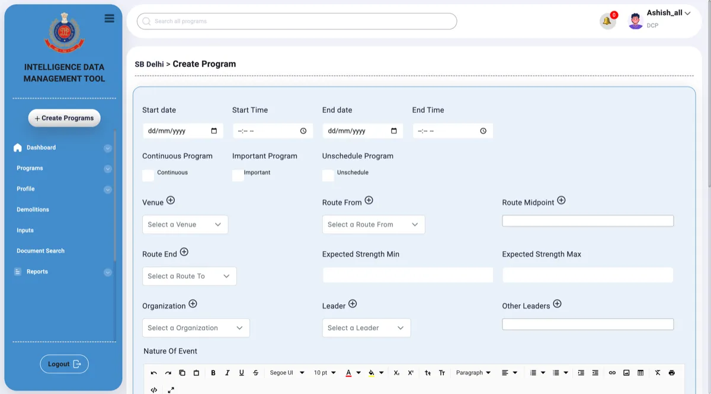
What was broken
- No hierarchy. Labels, fields and headings all had equal weight. There was no natural reading path.
- An 11-tab form. A single program entry form had 11 horizontal tabs. Officers had to hunt across all of them to finish basic tasks.
- Dangerous button placement. The delete button sat right next to save, with identical styling. In this context that is a real operational risk, not just bad design.
- Noise everywhere. Every text field had a full rich text toolbar. Officers logging intelligence do not need font colours and strikethrough.
- Inconsistent patterns. Some tasks used popups, others used full pages. Same work, two different models.
The tool was built for data entry, not for decisions made under pressure.
How I learned the workflow
This was a fast-moving startup, so research had to be lean. The product manager walked me through every core task step by step. I combined that with direct feedback from our point-of-contact officer and observations from onboarding sessions.
I found three types of users with different needs:
- Field officers who log intelligence quickly, often under time pressure.
- Supervisors who track program status across many events.
- Senior officers who read reports and make approval decisions.
The clearest insight: officers needed to see their workload at a glance. They could not afford to read every row in a list. And trust in the tool was low because of past data entry mistakes, so preventing accidental actions mattered as much as speed.
Decision 1: a visual language that belongs to its users
The goal was a tool that felt purpose-built for law enforcement, not a generic dashboard with a police logo on it. I chose dark navy as the base because it reads as calm and serious. Gold became the accent colour because it matches the uniform colours worn by Indian law enforcement officers. That was deliberate. The tool should feel like it belongs to them.
I tried three background directions first: a subtle texture, a bright blue gradient, and a near-black flat tone. All three failed the same test. They could belong to any product. The final direction was a night aerial satellite view of India. Officers work with real events in real places, and showing the country from above grounded the tool in its purpose.
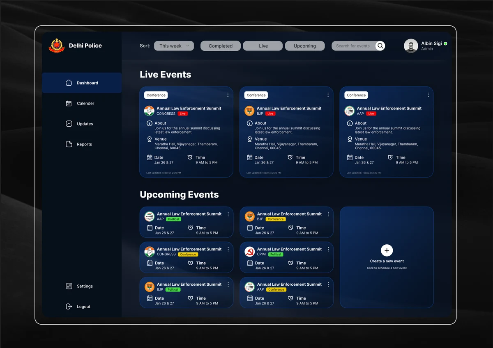
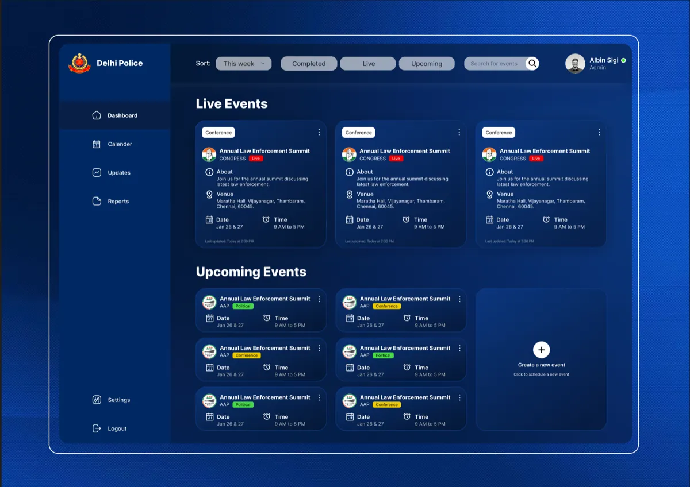
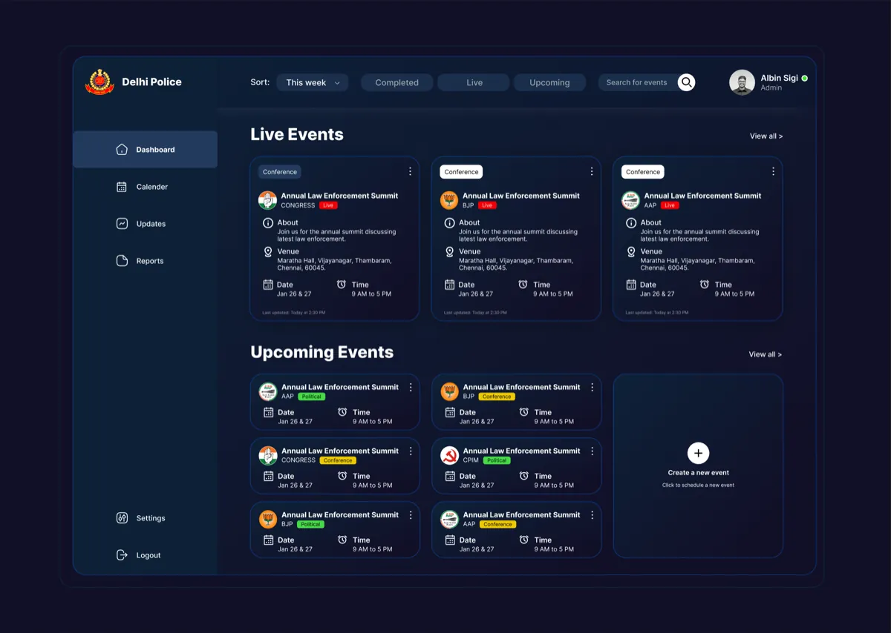
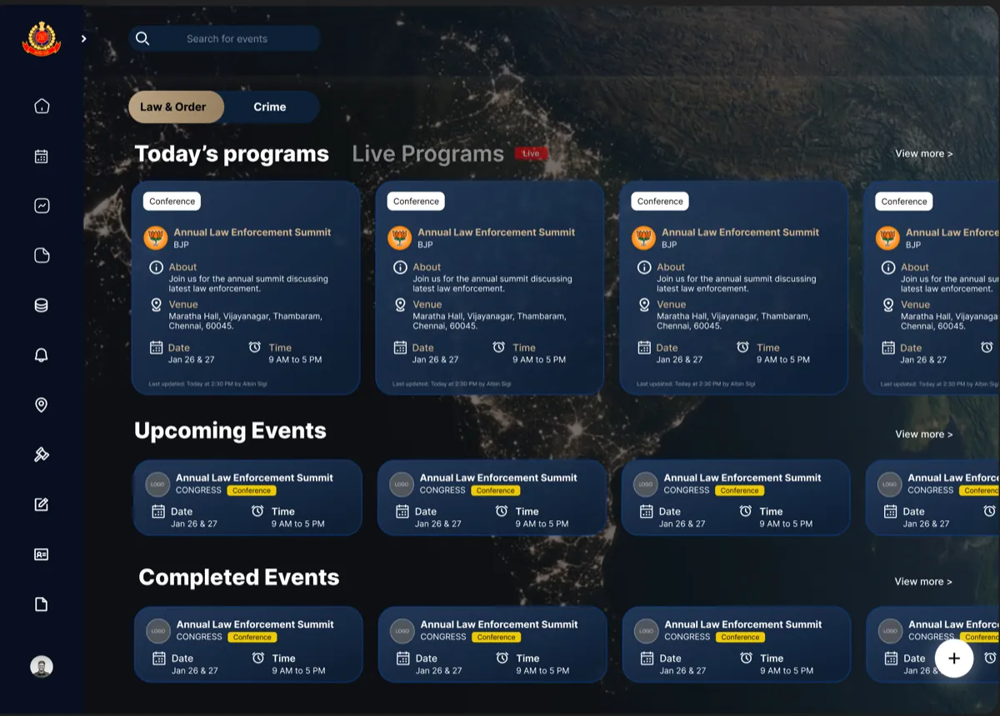
Decision 2: a homepage sorted by urgency
In the old tool, live events, upcoming events and past events sat in one flat list. An officer managing an active situation had to read everything to find what needed attention. The redesign puts today's and live events first, always. Upcoming events follow. That is how officers think about their day, so that is how the screen is ordered.
Each program became a card showing its category, venue, date, time and live status in one scannable unit. A small line at the bottom of each card shows which officer last updated the record and when. In a tool where many officers touch the same record, that one line builds accountability without adding a single extra step. Officers noticed it and said so.
The homepage went through seven documented versions. Ideas that got cut along the way: priority tags that crowded the cards, different card colours per section that made the screen feel like two products, and compact rows that hid too much information. Each cut taught us what officers actually needed: one card style, clear order, no decoration.
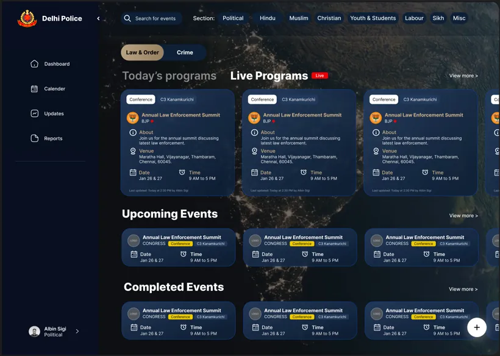
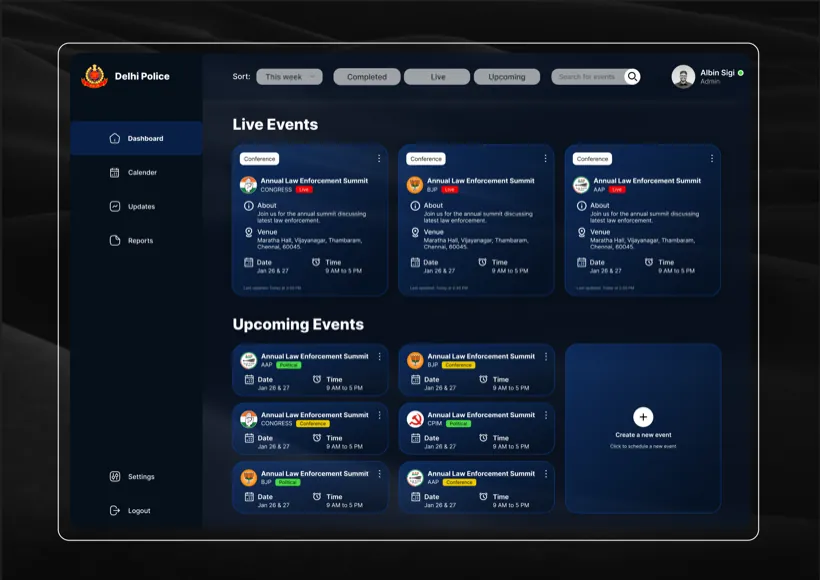
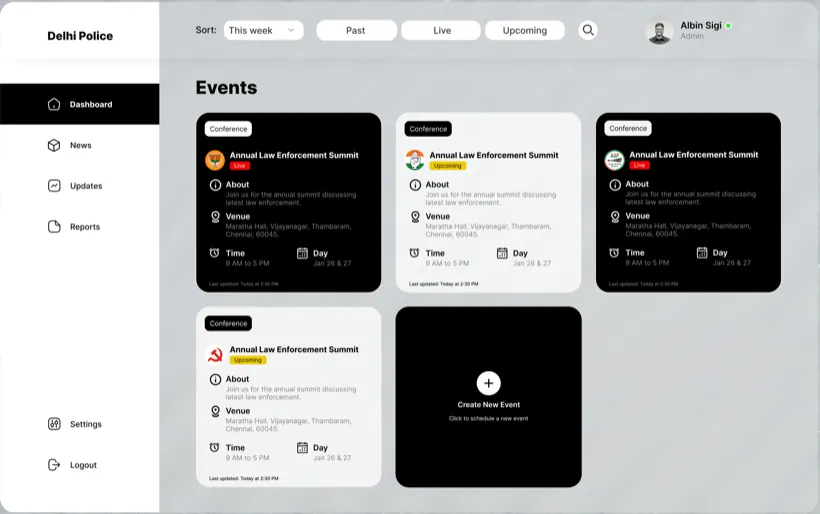
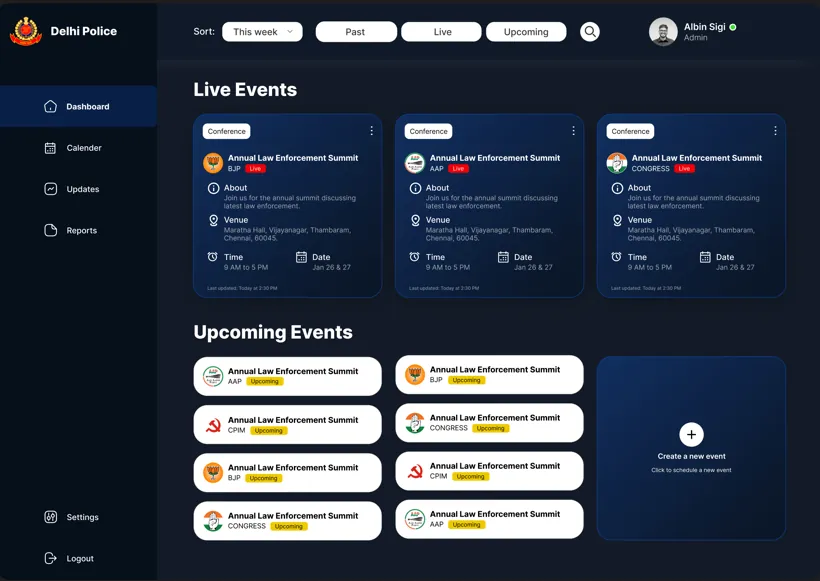
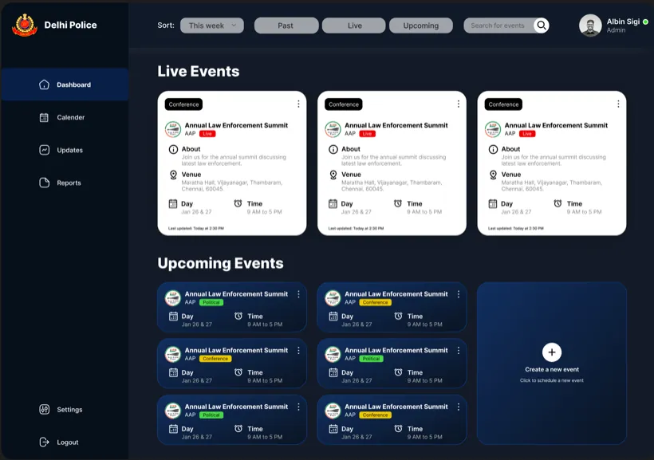
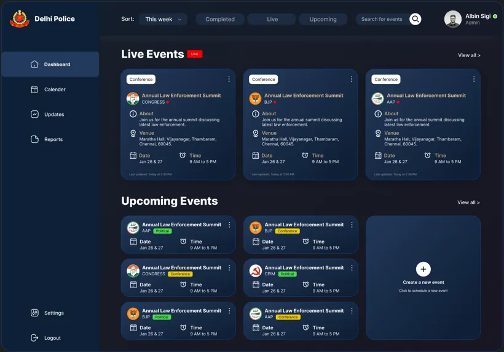
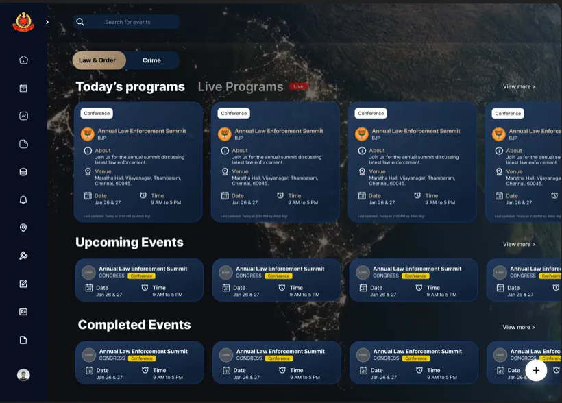
Decision 3: killing the 11-tab form
This was the most critical fix in the whole product. Officers had no way to see what was filled and what was pending without clicking through every tab. Our point-of-contact officer confirmed that officers were regularly abandoning the form midway. In an intelligence system, incomplete records are an operational risk.
The key insight: filling a program form is not a linear task. An officer might add basic details first, come back hours later for venue information, then again to log incident details. The form had to support that, not fight it. A step-by-step wizard was considered and rejected, because it forces an order that does not match how the work happens.
The solution was one screen with all 11 sections as collapsible cards:
- Everything visible at once. Officers see all sections and jump straight to the one they need.
- Progress on every card. A fraction like 3/4 shows fields filled, with red for empty, gold for partial, green for complete. An officer returning midway can scan the whole form in seconds.
- Focused editing. Clicking a card opens a clean modal form, so the overview stays calm and the editing space stays focused.
The card design went through 12 documented iterations to get the completion indicator, labels and editing pattern right. A pinning system that let officers keep their most-used sections on top was fully designed but cut for development time.
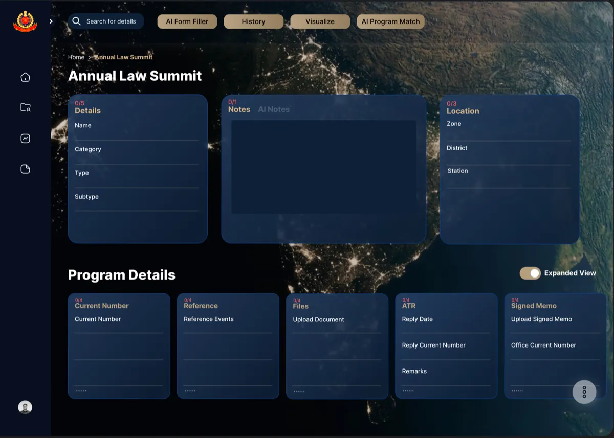
Decision 4: a report wizard that prevents wrong prints
After every program, officers generate a PDF report and submit it to senior officers for approval. In the old tool there was no structure, and officers frequently printed the wrong report while believing it was correct. Reports go up the chain of command, so that is a real failure with real consequences.
Unlike the program form, report generation is a linear task. You pick the report type, select the data, then review and export. So here a three-step wizard was the right pattern. It guides each decision in order and confirms each step. Choosing the right pattern for each workflow, instead of one pattern everywhere, was a conscious decision.
Decision 5: AI features that stay out of the way
AI features are easy to add and easy to get wrong. In a law enforcement tool, officers must never feel the system is doing something unpredictable with sensitive data. I surfaced four AI tools directly in the top navigation of the program view: AI Form Filler, History, Visualize and AI Program Match. If a feature saves officers time on frequent tasks, it should be one click away, not three.
My favourite of these is AI Notes. Officers could type or speak their observations in English or Hindi, in their own words. The AI formatted the raw input into a clean, structured note. The officer changed nothing about how they work. In a multilingual force, that matters.
All AI features were scoped for phase 2, on purpose. Phase 1 fixed the core usability failures first. Shipping AI on top of a broken foundation would have created more problems than it solved.
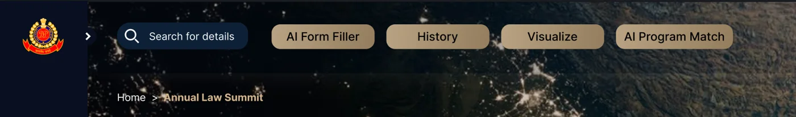
The result
- The redesigned tool was launched by the Commissioner of Delhi Police in December 2025 and described internally as a significant success.
- Two more high-profile divisions, Delhi Special Cell and Delhi Crime Branch, approached the company to get the same system. No sales effort was involved.
- Officers reported the new interface was much easier to navigate, especially program management and report generation.
The company closed in early 2026, so the expanded rollout did not happen. That was outside anyone's control on the design side.
What I learned
Designing for high-stakes work taught me that clarity is a safety requirement, not a style choice. Every unnecessary element is a possible source of error. When an officer prints the wrong report because the screen was unclear, that has real consequences.
If I did it again, I would push harder for direct usability sessions with officers instead of relying on intermediaries. The best design decision I made was not a screen. It was asking, over and over: what does this officer need to do right now, and what is in the way?